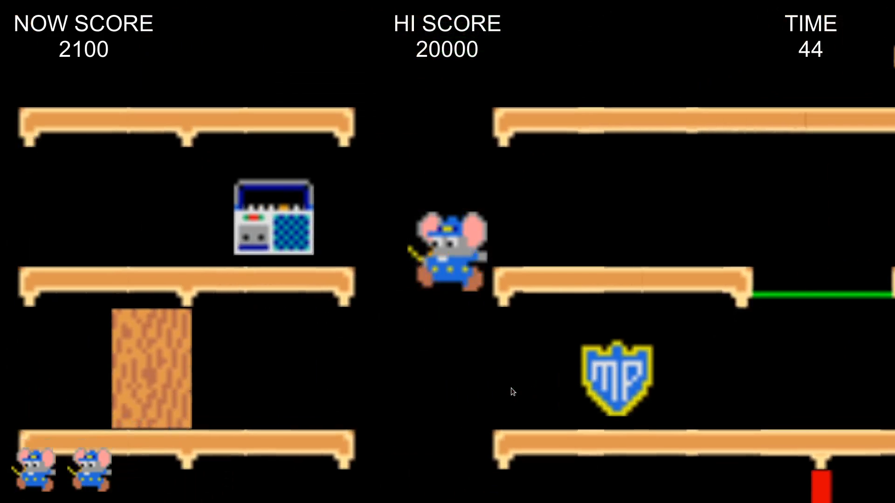
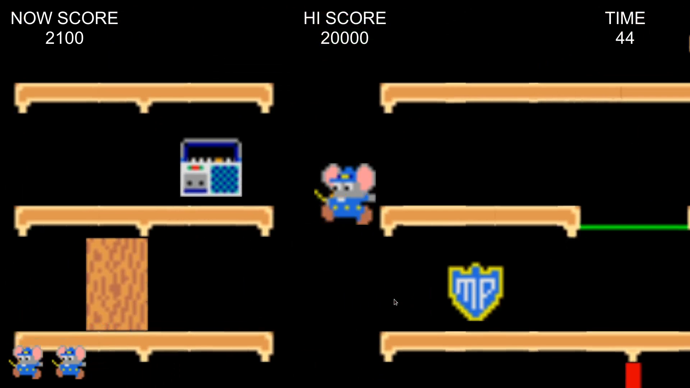
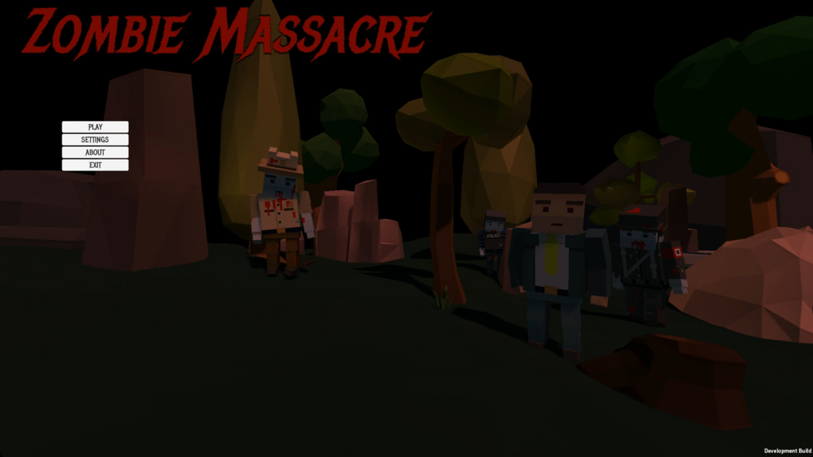
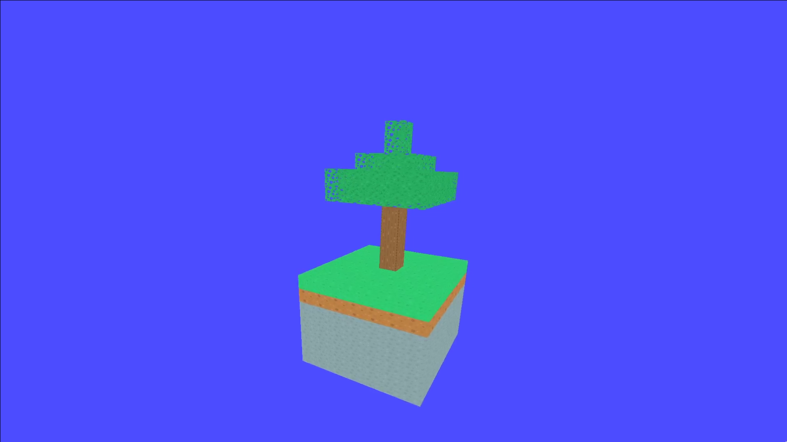
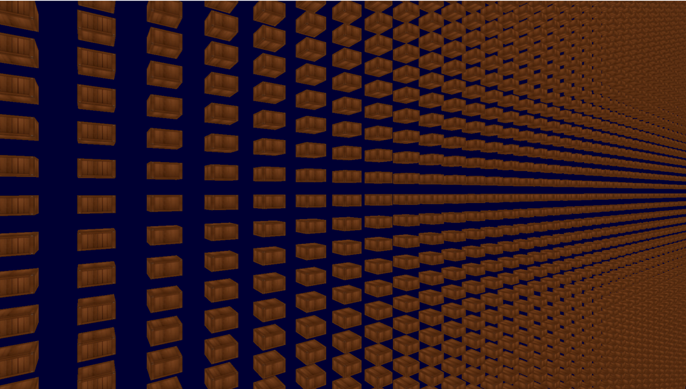
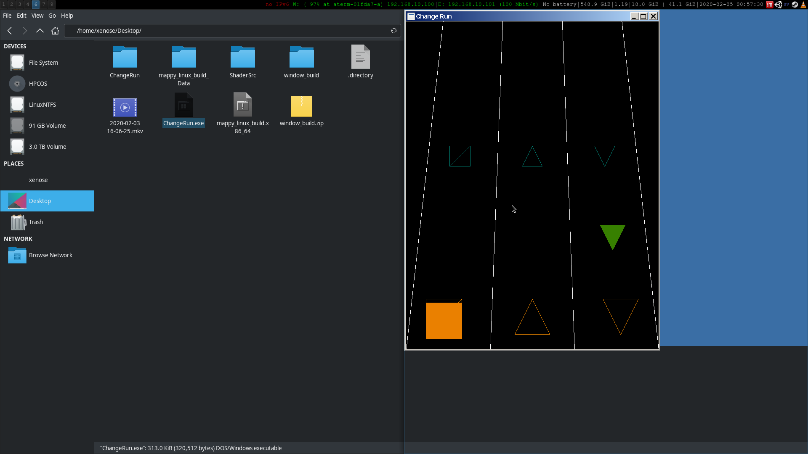
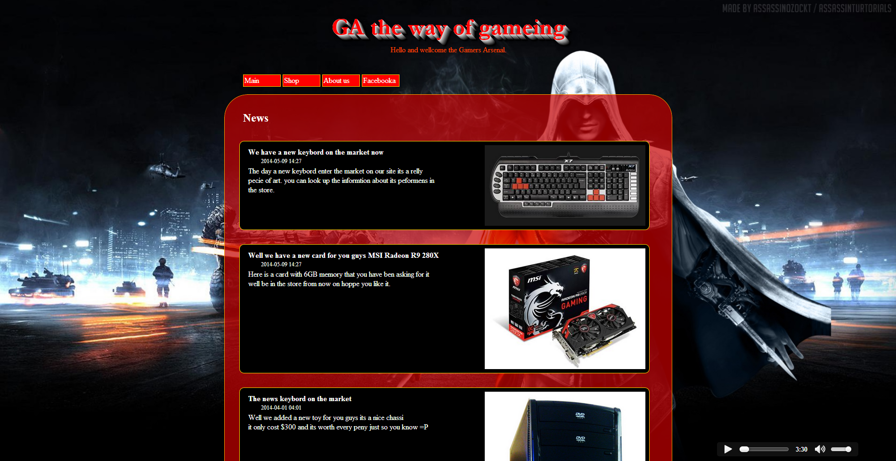
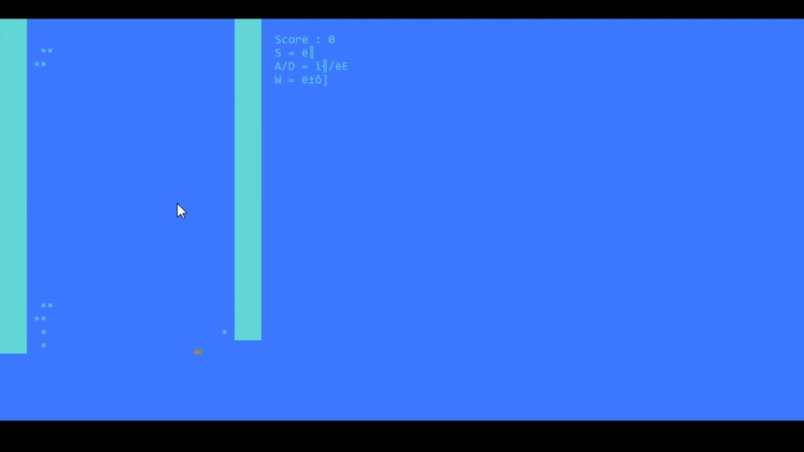

Mappy
2020
 image 01 of the game mappy <---">
A classic japanese game called Mappy, Created by me and my classmates using Unity3D for "We are TCA" event.
I work on the entity controlling scripts and door mechanics.
2020
 image 01 of the game mappy <---">
A classic japanese game called Mappy, Created by me and my classmates using Unity3D for "We are TCA" event.
I work on the entity controlling scripts and door mechanics.
2016
 image 01 of the game mappy <---">
A small game created by me and my classmates durring a game jam in high-school
2019

This is based on the classic Astroids game made by Atari.
Its written in C/C++ using the SFML libray.
2019
 image 01 of the game mappy <---">
Made as a exhibit demo showing a OpenGL example.
2018
 image 01 of the game mappy <---">
My first real deep dive into OpenGL.
2018-2019
 image 01 of the game mappy <---">
Using my new learnt OpenGL I implemented the
2014
 image 01 of the game mappy <---">
A school project for the web development class.
2018
 image 01 of the game mappy <---">
A school project for challenging classmates.
I implemented a Tetris clone using the Windows command prompt using bit flags.